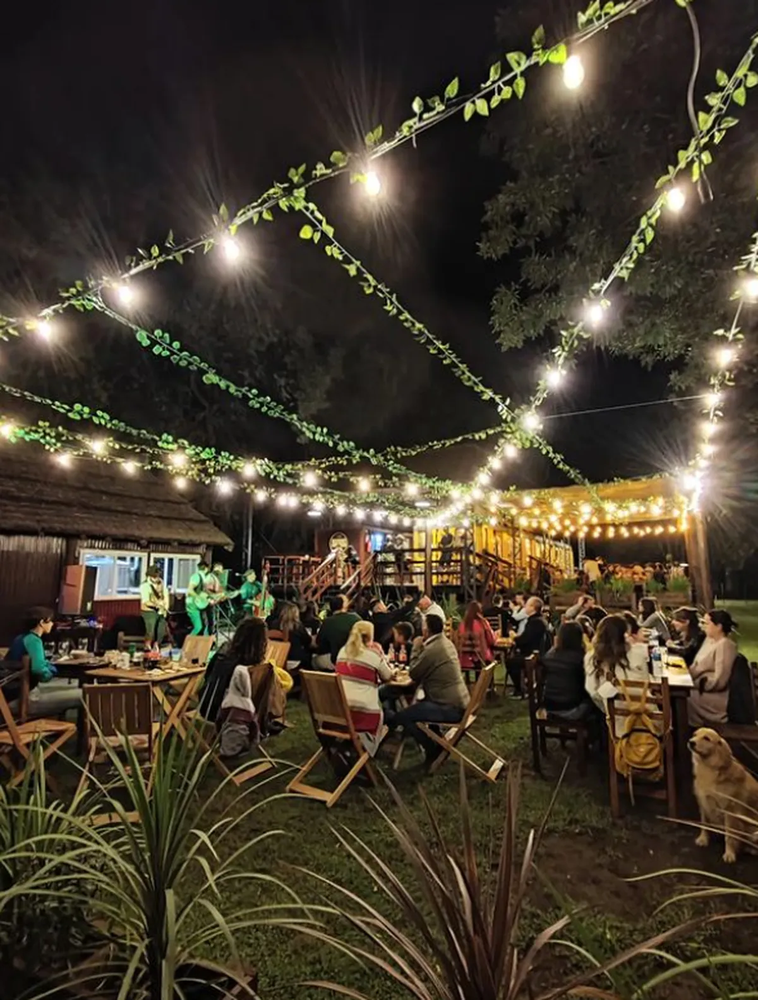

Berdier se halla en el kilómetro 196 del ramal a Rosario entre las estaciones de Los Angeles y Salto. Debe su nombre a Agueda Pacheco de Berdier, antigua propietaria de las tierras de la zona. La localidad se encuentra a diez kilómetros de la ciudad cabecera y se ingresa por camino mejorado desde la Ruta 191.
Situada a 7,3 km de la ciudad de Carhué, fue fundada en 1921 a orillas del lago del mismo nombre, y llegó a tener cerca de 1.500 habitantes, siendo visitada por un promedio de 25 mil turistas durante el verano.
En 1985 una inundación provocada por una crecida del lago sumergió al pueblo completamente bajo el agua, obligando que se evacuara casi toda su población. Posteriormente en los últimos años el agua comenzó a retirarse, dejando a la vista las ruinas de la ciudad, que se han convertido por sí mismas en un atractivo turístico.
La repentina destrucción de la ciudad, junto con sus ruinas, despertaron el interés de periodistas, antropólogos, fotógrafos y deportistas.12345 Después de todo, Villa Epecuén no estaba totalmente deshabitada, ya que Pablo Novak, un vecino cuya familia estaba firmemente ligada a la ciudad mediante distintos emprendimientos, se negó a abandonarla y permaneció ahí como el único habitante.
Cervecería Beerdier
Si se habla de gastronomía, su gran atractivo para el turismo está en la cervecería Beerdier, que tiene forma de vagón de un viejo subte. La familia de los Valarino son los encargados de producir artesanalmente la bebida alcohólica y se transformaron en un clásico de la zona. Allí se pueden comer pizza, hamburguesas y otras comidas.

La Estación Berdier
el Ferrocarril General Belgrano-, han quedado abandonadas. La misma fue construida por la Compañía General de Ferrocarriles en la Provincia de Buenos Aires en 1908, como parte de la vía que llegó a Rosario en ese mismo año pero, desafortunadamente, es desde 2013 que se encuentra fuera de uso. Sin embargo, Hoy en día se sigue alentando su visita no solo como alternativa de descanso, sino también como excusa para ir detrás de uno de los bocados más emblemáticos de la cocina argentina.
Cicloturismo en Berdier
Berdier es uno de esos lugares dentro de la provincia de Buenos Aires que caben en un recorrido sobre ruedas. Viajar en bicicleta visitando los lugares que se encuentra uno a su paso es una de las propuestas recreativas más saludables y ecológicas de los últimos tiempos. Por esta razón, con el paso del tiempo es cada vez más común escuchar hablar de cicloturismo. Incluso, muchos destinos reconocidos han comenzado a diseñar itinerarios específicos para quienes gozan de andar por circuitos naturales.

Si querés saber dónde dormir en Villa Epecuén tenés que buscar alojamiento en Carhué, que se encuentra a menos de 10 km de la villa. Esta opción es la más popular ya que es el pueblo más cercano y de mejor acceso si estás pensando hacer turismo en Epecuén. Te recomendamos el post ¿Qué hacer en Carhué? para averiguar más data del lugar.